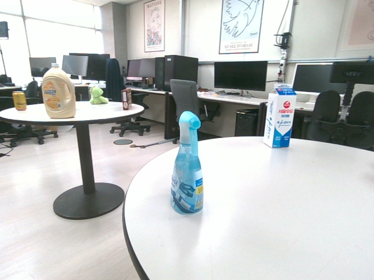
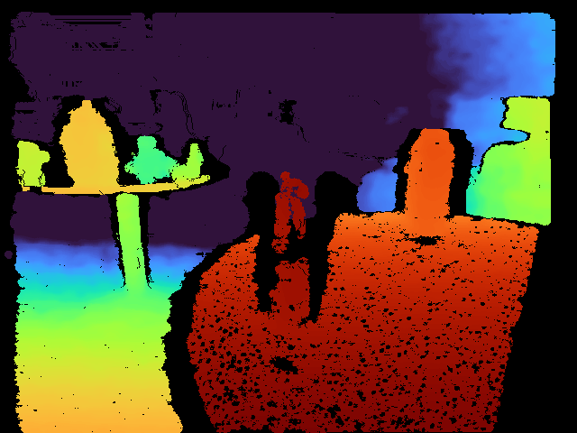
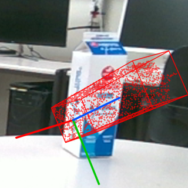
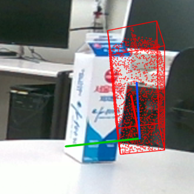
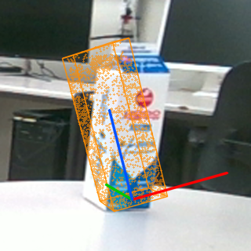
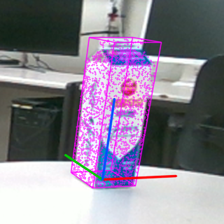
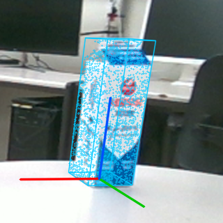
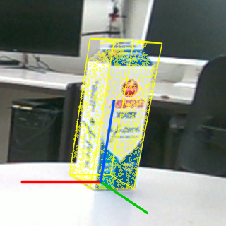
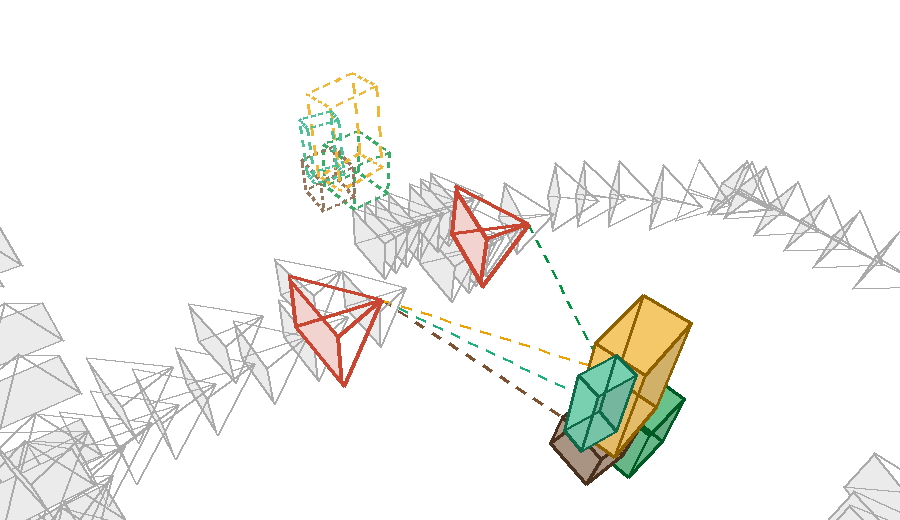
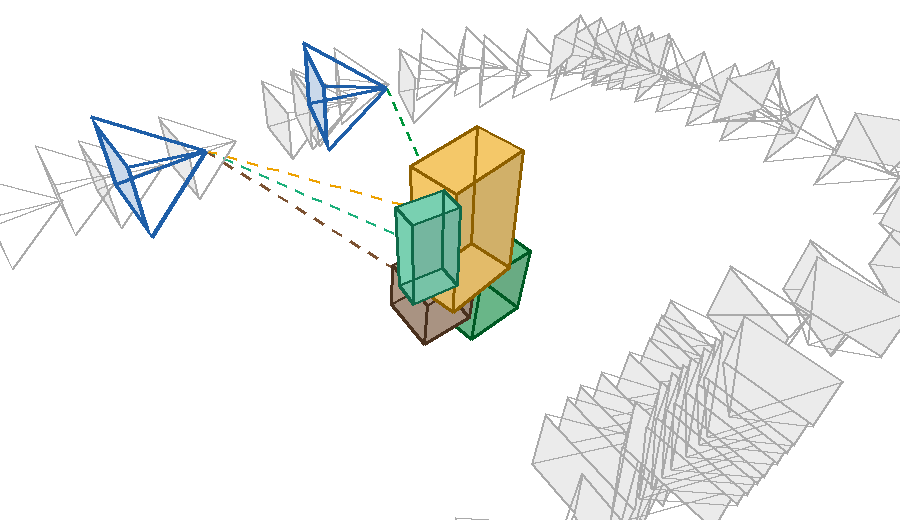

A. Asynchronous Perception and Capture-Time Registration (SLAM + 6D Estimation + Timing + Registration)
1. Sensor Input (On Mobile Platform)
RGB-D / LiDAR Camera

RGB image (30 Hz)

Depth image (30 Hz)

- RGB-D camera or LiDAR
- Real-time capture (30 Hz)
- Camera intrinsics / extrinsics
- Multi-object indoor environment
SLAM (Lightweight, not main contribution)
SLAM pose stream (30 Hz)
time
- Track camera pose and keyframes (3,844 / 3,844 frames)
- Loop closure and map optimization
- Output: SLAM pose TW←C(t), keyframes Ki
2. Improved Zero-Shot 6D Object Pose Estimation (Accurate and Fast Detection)
RGB-D frames
(≈ 2 Hz)


· · ·
2-1. Improved candidate generation & verification
Text prompt
(optional)
Object proposals
(YOLO-World)
Mask generation
(MobileSAM)
"milk carton"
"white jug"
"dino doll"
…


1
Semantic verification
(DINOv2 class token)
2
Appearance verification
(feature similarity)
3
Color distribution check
(HSV histogram)
4
Exclusive assignment
(one object per instance)
✓
✗
✓
✗
✓
no reject
here
✓
vs. teddy
bear
2-2. Improved 6D pose estimation and validation
Valid object
(mask + RGB-D)
Pose hypotheses
(coarse, 6000 → 300)
Fine refinement
(PEM)





…

Candidate filtering and validation (proposed)
1. Silhouette
overlap
2. Feature
agreement
3. Pose
consensus

IoU 0.87 > 0.42 ✓
267 / 300 pass
cos 0.68 > 0.45 ✓
250 / 300 pass
cluster 153 ✓
occupancy 0.61
Output of 6D Estimation (Object Observation)
| Object | Label | Center
TR←O | Capture
time | Score | Mask |
|---|
| 1 | milk | | 59.75 s | 1.00 | |
3. Asynchronous Timing Modeling (Different Processing Rates)
SLAM pose stream (30 Hz)
6D estimation stream (object
poses, 2.1 Hz measured)
- Processing rates differ (SLAM: 30 Hz, 6D: 2.1 Hz; 265 images in 128 s).
- Use capture time tc for each 6D result.
- Arrival time ta = tc + 0.7–6.6 s (network / computation).
- Time alignment using tc is required.
4. Capture-time Registration (To Reference Keyframe)
1
Interpolate SLAM pose
at capture time tc
TW←C(tc)
(interpolated)
2
Find reference keyframe Kref(tc) = K65


K64
Kref
K66
3
Apply camera extrinsic and transform
to keyframe coordinate
TK←O = TW←K−1 · TW←C(tc) · XC←O
XC←O : camera extrinsic
C : recognition camera
K : reference keyframe
Anchored Object Observation (Output of Step 4)
| Object ID | Label | Reference keyframe | Relative pose | Capture time | Confidence | Features / mask |
| 4 | milk carton | K65 | TK←O | 59.75 s | 1.00 | … |
B. Keyframe-Anchored Spatial Object Mapping (Object State Map + Loop-Closure Update)
5. Keyframe-Anchored Spatial Object State Map (Main Contribution)
Store each object relative to its reference keyframe and its state over time.
▲ : SLAM keyframe (K)
— : keyframe trajectory
■ : tracked object (anchored to K)
real point cloud, keyframes and objects (office run)
Object State (stored in the keyframe map)
| ID | Label
(category) | Reference
keyframe | Relative pose
TK←O | Confidence | Obs.
count | State |
|---|
Key features
- Each object is anchored to a reference keyframe.
- Store relative pose, confidence, observation history and class.
- Manage object state (tentative / active / lost / remembered / deleted).
- Re-associate with the same ID when the object reappears.
- Robust to temporary tracking failures and viewpoint changes.
Object state management
(existence probability)
tentative
active
lost
remembered
deleted
≥ 2 obs.,
p > 0.6
missed in
view & range
p < 0.05,
≥ 5 obs.
removed
(depth check)
same
ID
6. Loop-Closure-Aware Object Map Update (Main Contribution)
When SLAM is corrected by loop closure, update all anchored objects consistently.
Before loop closure
After loop closure


SLAM
loop closure
(graph optimization)
keyframes moved
by up to 3.05 m
Update anchored objects using updated keyframe pose
T′W←O = T′W←K · TK←O
TK←O : stored relative pose (unchanged)
T′W←K : updated keyframe pose after loop closure
T′W←O : updated global object pose
- All anchored objects move together with the updated keyframe pose.
- Same 119 results: 68 (map frame) vs 6 (anchored) end > 10 cm from the final object position.
- Maintain global consistency of the object state map.
7. Result: Globally Consistent 3D Object State Map
- Real-time SLAM (0 dropped frames) with 6D poses arriving 1.6 s late.
- 8 objects confirmed, 0 same-class duplicates in the map.
- Supports text prompt object search and robotic manipulation.


· · ·